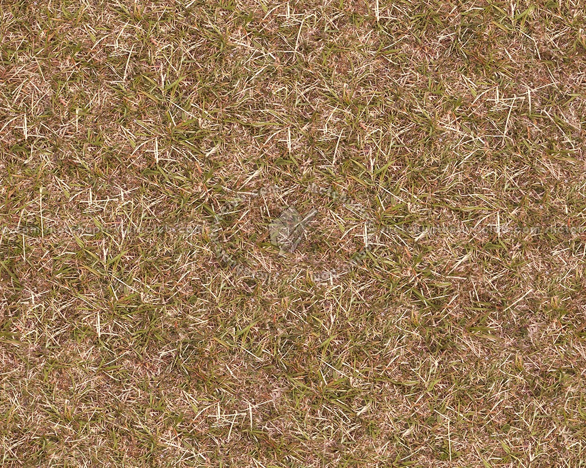
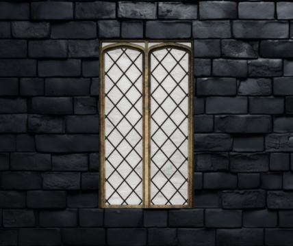
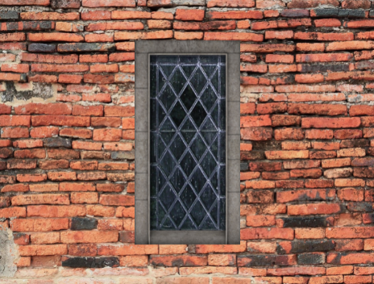
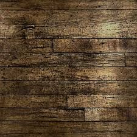
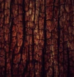
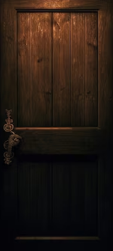
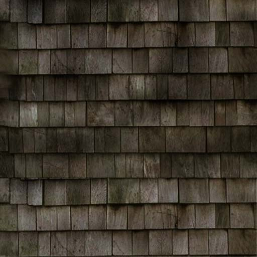
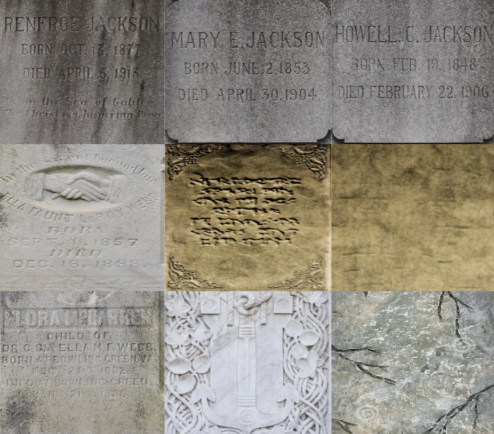
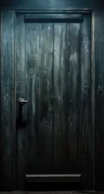
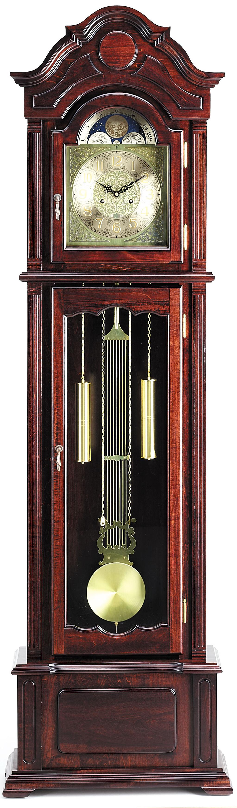
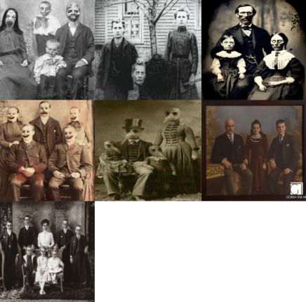
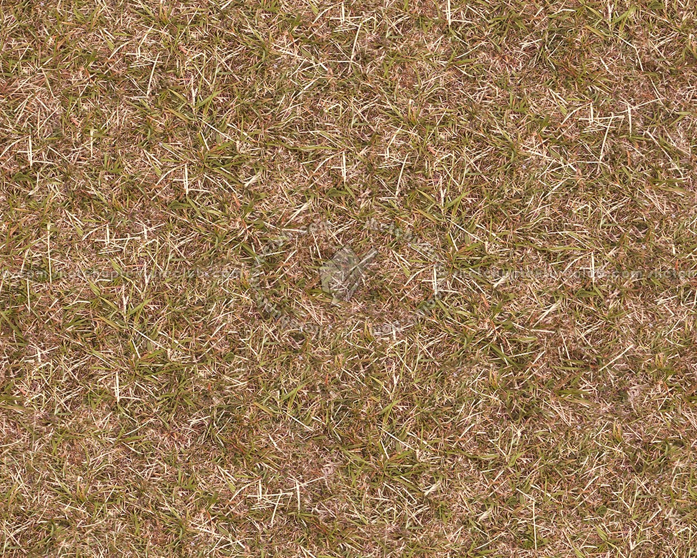
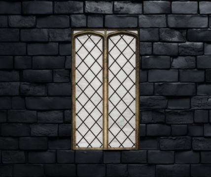
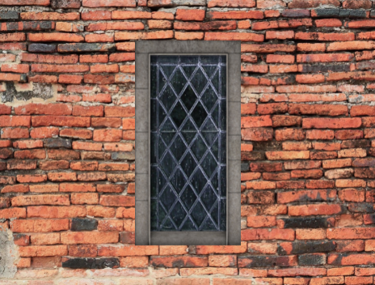
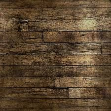
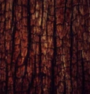
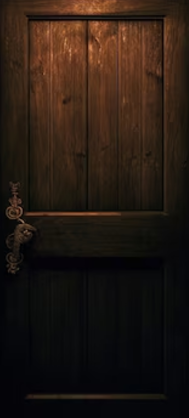
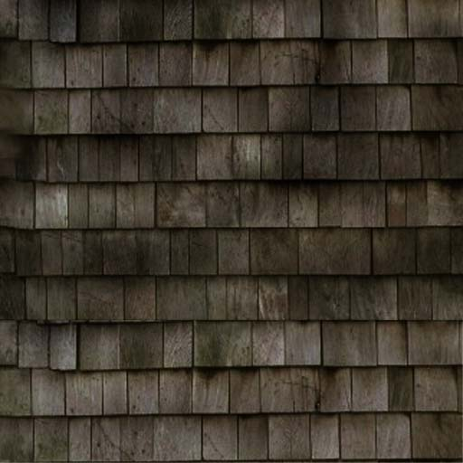
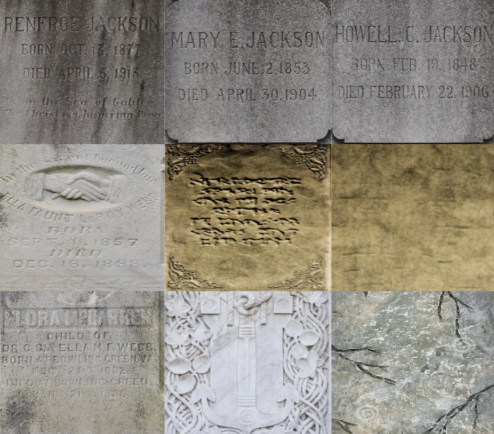
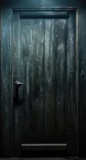
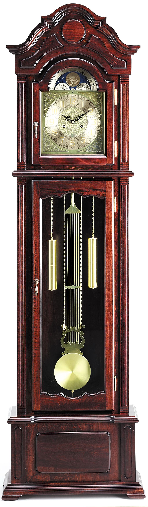
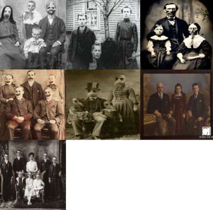
The Controls: "W" = Forward, "A" = Left, "D" = Right, "S" = Backwards, "O" = Action Button
Use Mouse to drag screen, and Spacebar to jump
Addtionally: Can use left and right arrows to turn 90 degrees in either direction